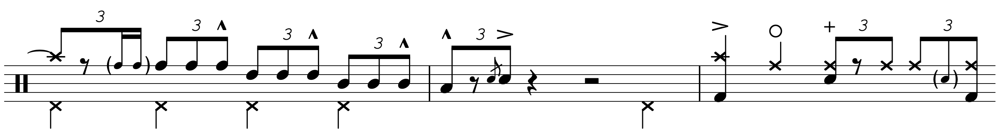

Transcription: “Rosanna” — Jeff Porcaro with Toto

A simple post for this week: I want to take a unique look at a classic drumming song, “Rosanna” by Toto, off of Toto IV with Jeff Porcaro on drums. If there’s one part of this song all drummers know about, it’s the shuffle, but that topic’s been done to death. Instead, I want to look at a severely underrated part of the drum performance, and that’s the fills.
Porcaro plays some awesome fills throughout the track, even if they are overshadowed by the main groove. The best one comes right after the pre-chorus into the hook; it’s definitely one of the best licks any drummer has laid down on a record. It’s also been a source of confusion for many who have listened to “Rosanna”, but it’s a deceptively simple fill:
It’s basically just three hits to each tom, most certainly played as RRL. There’s a little ruff at the start that's difficult to hear on the full mix, but the isolated drums show it to be there.
The final hook repeats twice, and Poracro uses the pre-chorus fill one final time where he throws in a bucket fill, played as 16th note triplets:

That’s all for now — I’m preparing a bigger project for my post on the 20th, so stay tuned for that.
“Rosanna” on Spotify and Apple Music.
Posted on September 6, 2020
Tags: Transcriptions • 2020 • Jeff Porcaro • Toto